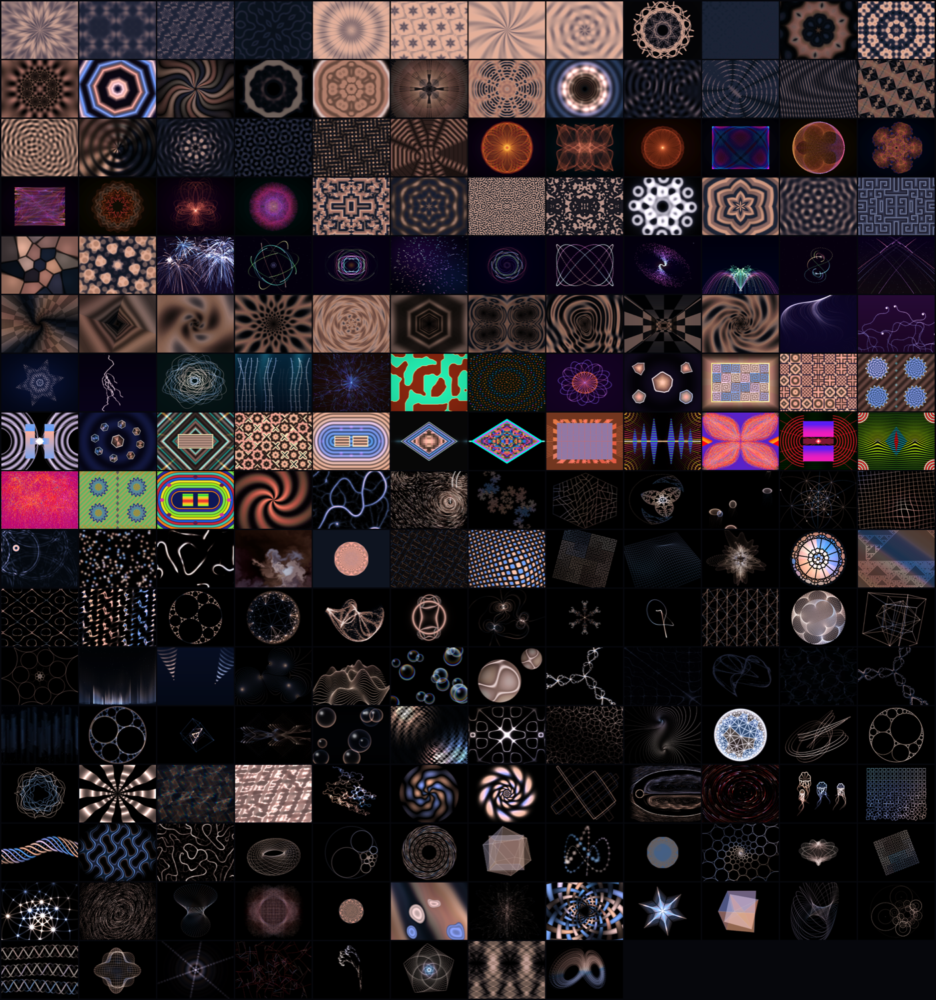

001

Kaleido Rose
A full-screen dihedral kaleidoscope whose fold count steps through 4, 6, 8, 10, 12, 14, 16 sections, each stage crossfading into the next.
JD_MODE=1 ./dazzle64
LIBCSystems · jelia.nyc
Thirty years after the DOS kaleidoscope DAZZLE.EXE, every routine rebuilt in hand-written ARMv9.2-A assembly and C — 100 pattern modes and 30 palettes, shuffled so it never repeats itself. Each mode below runs on its own by number.
100 modes 30 palettes 124 routines shipping ~175 fps, single thread 0 floating-point in the assembly core
Download for macOS Source on GitHub
All 100 modes, one frame each · full catalogue below
macOS says “Apple could not verify JellyDazzle is free of malware.” That is Gatekeeper flagging any app without a paid Apple notarization certificate. Nothing is wrong with the app — every line of source is public. Here is the way through, and you only do it the first time:
Or the one-liner, which works regardless — paste it in Terminal after downloading:
xattr -dr com.apple.quarantine ~/Downloads/JellyDazzle.app
Apple Silicon Macs (M1 or newer) · ESC quits · nothing to install, SDL is bundled inside · this whole dance disappears once the Developer ID certificate is in place.
Every pattern runs standalone — set JD_MODE
to its number and that mode fills the screen. ★ marks the ten the curators scored highest.
Scores are dazzle-vibe + cohesion + motion, out of 30.
A full-screen dihedral kaleidoscope whose fold count steps through 4, 6, 8, 10, 12, 14, 16 sections, each stage crossfading into the next.
JD_MODE=1 ./dazzle64

A "bathroom-tile kaleidoscope": the p4m wallpaper group folds a drifting four-wave plasma into a perfectly mirrored quilt of clover-and-star tiles.
JD_MODE=2 ./dazzle64

A p6m-flavored hexagonal wallpaper: every cell of a triangular lattice holds a 12-petal snowflake rosette built by a D6 mirror fold, tiled edge to edge like stained...
JD_MODE=3 ./dazzle64

Neon Truchet ribbons — glowing quarter-circle arcs that link into meandering paths — seen through an 8-fold mirror fold, so the random tile field becomes a perfectly...
JD_MODE=4 ./dazzle64

A tie-dye sun mandala whose number of spokes is never constant: the fold count N glides continuously between 4 and 16, so petals split and merge like a living iris while...
JD_MODE=5 ./dazzle64

A hexagonal wallpaper that morphs between two symmetry groups live: chiral pinwheels (rotation-only, p6 flavor) melt into mirrored six-point stars (p6m flavor) and back,...
JD_MODE=6 ./dazzle64

A smooth-shaded log-spiral pinwheel — the direct heir of the original's R16 tile — whose arm count steps through 6, 9, 12, 8, 10 with soft crossfades, while spiral...
JD_MODE=7 ./dazzle64

Concentric polygon rings — square, octagon, diamond — pulse outward from the center while the ring shape itself morphs between the three norms and an 8-petal angular...
JD_MODE=8 ./dazzle64

A glowing Lissajous ribbon stamped N times around the center (N steps through 5, 7, 9, 12, 8, 6), weaving a luminous guilloche rosette on near-black — like spirograph...
JD_MODE=9 ./dazzle64

A wall of hand-glazed tiles: every 60-px cell is its own tiny 4-fold mirror kaleidoscope, alternate cells add a diagonal fold (p4g-style checkering), and per-cell phase...
JD_MODE=10 ./dazzle64

The canonical four-sine demoscene plasma folded six ways, so its blobs become breathing petals around a slowly turning center.
JD_MODE=11 ./dazzle64

A rotozoomed procedural tile texture seen through an 8-fold mirror: mirrored copies counter-rotate against each other at every seam exactly like a physical kaleidoscope...
JD_MODE=12 ./dazzle64

A classic fly-through tunnel whose mouth orbits off-center behind a 4-fold mirror, so four (then eight, by reflection) tunnel mouths bloom, merge, and drift apart while...
JD_MODE=13 ./dazzle64

Amiga copper bars promoted from scanlines to radius: six neon gradient bars ride independent sine paths in and out as crisp concentric octagon rings on a midnight-blue...
JD_MODE=14 ./dazzle64

The demoscene twister run over radius instead of scanlines: a five-armed braid of jewel-toned ribbons (ruby, amber, emerald, sapphire) that twists sinusoidally along its...
JD_MODE=15 ./dazzle64

A single Lissajous shadebob whose additive trail is folded six ways: on screen, twelve synchronized bobs weave a glowing rosette whose self-crossings bloom into hot...
JD_MODE=16 ./dazzle64

Four metaballs folded six ways so every ball kisses and fuses with its own reflections across the wedge seams, forming soft lobed mandalas that continuously merge and...
JD_MODE=17 ./dazzle64

Kefrens/Alcatraz bars with the scanline axis swapped for radius: a never-cleared angular line buffer is stamped and re-stamped as radius grows outward, so the bar's...
JD_MODE=18 ./dazzle64

Two interference-ring sources orbiting inside an 8-fold wedge — sixteen mirrored wave sources on screen — whose beat patterns weave silky teal-and-ember moiré fabric...
JD_MODE=19 ./dazzle64

Fold-aware video feedback — the king of dazzle effects: a glowing orbit-blob and a breathing ring are stamped into a 7-fold wedge, and every generation of the feedback...
JD_MODE=20 ./dazzle64

Two invisible pebbles orbit the center of a lagoon-teal pond, their expanding ring waves overlapping into slowly turning hyperbolic fringe families.
JD_MODE=21 ./dazzle64

Two invisible ring emitters wander the screen and their bands XOR into crisp lens-and-eye interference figures — hard-edged fringes stepped from midnight indigo up...
JD_MODE=22 ./dazzle64

Two sheets of fine diagonal thread — like layered silk — slide across each other, and their beat pattern blooms into wide soft bands of rose, magenta and violet that bow...
JD_MODE=23 ./dazzle64

The HAKMEM munching-squares lattice (x XOR y) rendered as crystalline rainbow frost: nested diamond mouths and Sierpinski steps in full-spectrum bands that slowly rotate...
JD_MODE=24 ./dazzle64

Three wave sources ride the corners of a slowly turning triangle, each ringing at a slightly detuned frequency; where their wavefronts agree the screen ignites in...
JD_MODE=25 ./dazzle64

Two fans of spiral spokes — nine arms against eleven — counter-rotate around the center, and their angular beat sweeps a two-lobed brightness wave around a full rainbow...
JD_MODE=26 ./dazzle64

An eight-petal jade-and-emerald mandala: two wave sources ripple inside a single kaleidoscope wedge and the fold mirrors them into sixteen phantom emitters whose fringes...
JD_MODE=27 ./dazzle64

Seven plane waves at seventh-turn angles superpose into an aperiodic quasicrystal — a lattice of seven-fold rosettes that never exactly repeats, shimmering in peacock...
JD_MODE=28 ./dazzle64

Two woven square lattices — one turning clockwise, one counter, at slightly different scales — interfere into a giant slow moire plaid: broad diagonal bands of jade...
JD_MODE=29 ./dazzle64

Two trains of concentric octagon rings glide from a pair of wandering centers and interfere into a faceted crystal lattice — bright ice-white ridge lines over deep blue...
JD_MODE=30 ./dazzle64

A luminous spirograph rosette fills the screen, its petal count and loop depth slowly breathing as the gear ratio drifts, the whole figure cycling through saturated...
JD_MODE=31 ./dazzle64

A gauzy four-pendulum harmonograph web in teal-to-violet, mirrored four ways so it reads as folded silk; the detuned second pendulum makes the veil slowly precess and...
JD_MODE=32 ./dazzle64

A molten guilloché rose — crimson core rays fading through orange into a gold-green engine-turned rim — spun to 7-fold dihedral symmetry.
JD_MODE=33 ./dazzle64

A dense 3:4 Lissajous basket that fills the frame edge-to-edge, woven from a single saturated hue that slowly walks the color wheel; the sweeping phase makes the figure...
JD_MODE=34 ./dazzle64

Times-table string art on a circle of 180 pins: thousands of rainbow chords whose envelope morphs from cardioid through nephroid into higher epicycloids as the...
JD_MODE=35 ./dazzle64

Three stacked epicycles trace a scalloped, snowflake-like lace medallion with 5-fold dihedral symmetry, in cyan-blue-violet with green-gold accents as the band LFO...
JD_MODE=36 ./dazzle64

String art strung between two invisible Lissajous curves: every few ticks a rung is stretched from a point on curve A to the matching point on curve B, each rung a...
JD_MODE=37 ./dazzle64

Five concentric engine-turned bands — gold, copper, teal, ivory, steel-blue — each a wavy 11-and-17-lobed guilloché ribbon, like the security lathework on a banknote.
JD_MODE=38 ./dazzle64

Temple Fay's butterfly curve drawn over and over with slowly sliding internal phases, so nested translucent butterflies of amethyst, orchid and ice-blue open their wings...
JD_MODE=39 ./dazzle64

A Maurer-rose walk — straight chords hopping around a sine rose at a drifting step angle — piles up into a granular mandala with concentric hue bands: magenta core, gold...
JD_MODE=40 ./dazzle64

A rainbow cyclic-cellular-automaton quilt: interlocking rectilinear wavefronts and spiral cores in full-spectrum ramps, mirrored 4-fold so it reads as a woven mandala.
JD_MODE=41 ./dazzle64

A gold/teal chemical mandala: six-fold folded spiral wavefronts rotate around a starburst core like a Belousov–Zhabotinsky dish viewed through a kaleidoscope.
JD_MODE=42 ./dazzle64

A fingerprint / brain-coral labyrinth in indigo and amber: reaction-diffusion stripes locked into a 4-fold symmetric maze, with bright seams glowing along the stripe...
JD_MODE=43 ./dazzle64

Bold two-tone amoeba patches — dusty rose, amber, aubergine, chartreuse — melting into and out of each other like a living pueblo quilt, mirrored 4-fold.
JD_MODE=44 ./dazzle64

A colony of glowing ring-shaped "orbium" cells — cream, sage, and cyan on near-black — orbiting in three concentric symmetric rings.
JD_MODE=45 ./dazzle64

Three species — magenta, lime, azure — locked in a rock-paper-scissors chase, their territories drawn as bold six-petaled flower rings that spiral slowly inward.
JD_MODE=46 ./dazzle64

Seven BZ pacemakers — one center, six on a hexagon — each pumping out target rings that interfere into a lace of crimson, teal, and gold rosettes.
JD_MODE=47 ./dazzle64

A Greenberg–Hastings excitable medium: neon wavefronts crawl through a dark field, curling at their broken ends into greek-key spiral cores — like luminous circuitry...
JD_MODE=48 ./dazzle64

Stained glass alive: jewel-toned Worley cells — emerald, violet, ruby, gold — separated by dark leading that slithers as nineteen seed points orbit in three symmetric...
JD_MODE=49 ./dazzle64

A leopard-skin reaction-diffusion field built from two hexagonal spot lattices — big soft cells carrying small counter-rotating freckles — in blues, olives, and hot...
JD_MODE=50 ./dazzle64

Classic dazzle fireworks (footage R11): radial particle bursts with gravity-drooped trails accumulating over a deep plum gradient, each burst a single saturated hue with...
JD_MODE=51 ./dazzle64

Seven nested electron ellipses (the c06 atom, grown up) precess at different rates so their comet-bright heads weave a rotating rosette; each orbit keeps a faint dotted...
JD_MODE=52 ./dazzle64

Eight comet particles ride precessing Kepler ellipses around a glowing gold core, each dragging a long fading tail; stamped through the 4-fold mirror the tails braid...
JD_MODE=53 ./dazzle64

A gentle hyperspace cruise: 520 stars stream outward from a vanishing point that itself drifts on a slow Lissajous, leaving short radial streaks whose hue is set by...
JD_MODE=54 ./dazzle64

Three comets on breathing circular orbits, each stamped through a 6-fold rotational kaleidoscope: eighteen white-hot heads towing rainbow-shifting tails braid into a...
JD_MODE=55 ./dazzle64

Three hundred particles strung along a phase gradient of a 2:3 Lissajous form a single rainbow ribbon that folds, twists and unfolds like a starling murmuration;...
JD_MODE=56 ./dazzle64

A two-armed spiral galaxy of 3000 stars seen at a tilt: molten gold-white core melting outward through rose to blue-violet arm tips, turning with true differential...
JD_MODE=57 ./dazzle64

A garden-sprinkler fountain at bottom center launches droplets whose full parabolic arcs stay painted, mirrored left/right into a peacock fan; the launch angle sweeps...
JD_MODE=58 ./dazzle64

A gold sun and a cyan sun waltz around their barycenter dragging interlocking spiral trails; each carries four counter-rotating moons with their own short tails, and a...
JD_MODE=59 ./dazzle64

A night sky of 300 tinted twinkling stars over a teal horizon glow; slow meteors drift down in mirrored left/right pairs, each towing a long pastel ion trail that keeps...
JD_MODE=60 ./dazzle64

A classic demoscene tunnel: rainbow spiral bands rush past the viewer down a dark throat at screen center, with a soft checkerboard dimming that gives the walls tile...
JD_MODE=61 ./dazzle64

Nested glowing squares recede to a dark vanishing point — a square air-shaft you are falling down — while the whole shaft slowly torques, the deep end twisting faster...
JD_MODE=62 ./dazzle64

Two interlocked logarithmic spirals — a 3-arm falling inward and a 2-arm slowly winding the other way — interfere into curling paisley whorls that pour endlessly into...
JD_MODE=63 ./dazzle64

Twenty-four molten rays fan out from a dark core like a blacksmith's starburst, bending gently as they go, while glowing copper rings race down the rays into the center...
JD_MODE=64 ./dazzle64

The camera-pointed-at-its-own-monitor effect, stateless: a 5-petal flower is echoed at eight nested scales, each echo rotated half a radian deeper and dimmer, and the...
JD_MODE=65 ./dazzle64

A honeycomb throat: crisp neon hexagon hoops recede toward a black vanishing point, drifting outward toward the viewer while the whole shaft rotates almost...
JD_MODE=66 ./dazzle64

Eight tunnel mouths (two real, mirrored 4-fold) wander slowly around the screen, their ring systems flying in opposite directions and beating against each other into...
JD_MODE=67 ./dazzle64

A pond drains into a wormhole: the throat is not round but alive, its rim slowly flexing through kidney and trefoil shapes, while rings pour down it, swells radiate back...
JD_MODE=68 ./dazzle64

A first-person glide down an endless amber-and-mahogany hall: checkered floor and ceiling scroll toward you, side walls carry the same checker in a warmer key, and dark...
JD_MODE=69 ./dazzle64

Six broad petal arms — moss green through chartreuse to gold and vermilion — curl into a black gravitational core, and the spiral's tightness slowly breathes: the flower...
JD_MODE=70 ./dazzle64

Hundreds of silk threads drift along invisible currents, braiding into glowing violet-to-green rivers over a deep indigo vignette.
JD_MODE=71 ./dazzle64

A hedge of emerald vines climbs from the bottom of a plum-purple dusk, each stem shading green→gold as it rises, sprouting thorn-leaf fronds and finally curling into...
JD_MODE=72 ./dazzle64

A six-fold snowflake of frost dendrites grows outward from a hexagonal seed plate on a midnight-navy pane, arms feathering into cyan-teal side spurs that whiten near the...
JD_MODE=73 ./dazzle64

Two Lichtenberg bolts — one violet, one electric blue — crawl down a near-black sky in slow motion, forking into ragged branches wrapped in soft neon glow.
JD_MODE=74 ./dazzle64

Nested growth rings bloom from a drifting center like a coral polyp or lettuce edge, each new ring more ruffled than the last, sweeping the full hue wheel from magenta...
JD_MODE=75 ./dazzle64

A kelp forest grows toward the surface through teal water, god-rays slanting down between green and crimson stalks ringed with curved fronds and gold shimmer tips; faint...
JD_MODE=76 ./dazzle64

A radial web of amber and rose hyphae wanders outward from a warm-glowing heart, filaments meandering like living threads with bright growing tips and pulsing spore...
JD_MODE=77 ./dazzle64

Bold reaction-diffusion colonies — solid vermilion continents on cobalt seas, edged everywhere with crawling gold rims — slowly deform, split and merge like living coral...
JD_MODE=78 ./dazzle64

A sunflower head assembles itself floret by floret on the golden angle, rainbow seeds spiraling out from the center until they fill the frame in interlocking phyllotaxis...
JD_MODE=79 ./dazzle64

Two counter-rotating rose-curve tendrils draw themselves onto a deep violet ground with four-fold mirrored symmetry — an outer wide-petaled rosette and a tighter inner...
JD_MODE=80 ./dazzle64

Five glowing medallions — one large center, four mirrored satellites — float over a dim violet ring-field; each medallion is a filled regular polygon that slowly melts...
JD_MODE=81 ./dazzle64

A central rectangular panel packed with interlocking greek-key / meander hooks (alternating chirality per cell, exactly the a02–a04 maze-panel reference) framed in gold,...
JD_MODE=82 ./dazzle64

A stitched quilt of 48-px patches, each patch owning ONE distinct motif — nested diamonds, target rings, cross bands, or a woven checker — in its own hue, separated by...
JD_MODE=83 ./dazzle64

Four large sunflower-gear rosettes in a 2x2 array — toothed golden discs with dotted seed cores — sitting on a slow blue diagonal-stripe ground, with a chain of small...
JD_MODE=84 ./dazzle64

A bold CGA-poster machine on black (the c01–c05 "H-frame" reference): giant red concentric arc stacks open left and right like parentheses, a blue-to-magenta gradient...
JD_MODE=85 ./dazzle64

Nine faceted hexagonal gems — a big one at center, eight smaller ones on an elliptical orbit — glide over a deep-blue pond of faint breathing rings.
JD_MODE=86 ./dazzle64

A four-fold mirrored court of emerald-and-gold chevrons marching diagonally from every corner toward a cream-framed violet striped core at center (the d19–d21...
JD_MODE=87 ./dazzle64

The classic Islamic star-and-cross tiling as living objects: gold-rimmed 8-point stars filled with concentric rainbow layers alternate with cool plus-shaped crosses on a...
JD_MODE=88 ./dazzle64

Full-screen concentric racetrack (stadium) rings in rolling rainbow bands radiate from a pair of white-framed striped drums that sit side by side at center, their stripe...
JD_MODE=89 ./dazzle64

One huge diamond dominates the screen (the a01 rhombus-kaleidoscope): a magenta-rimmed confetti-mosaic heart wrapped in expanding concentric diamond bands that cycle...
JD_MODE=90 ./dazzle64

A single huge rhombus fills the screen: thick cyan and magenta rims, an interior packed with a 4-fold-mirrored quilt of tiny rainbow confetti cells, and faint concentric...
JD_MODE=91 ./dazzle64

A big central panel covered edge-to-edge in interlocking greek-key maze motifs, framed by a border of blue kaleidoscope wedges with small six-lobed rosettes, while thin...
JD_MODE=92 ./dazzle64

A red/pink sunburst pinched flat at a glowing horizontal centerline, its rays sweeping like a slowly opening fan; blocky stair-stepped blue spires with green step-seams...
JD_MODE=93 ./dazzle64

A flat violet flood on which fine, gently-curved rainbow threads accumulate one by one, always sweeping corner-to-center through a 4-fold mirror so the whole screen...
JD_MODE=94 ./dazzle64

A bold CGA-poster machine: two stacks of red concentric arcs bow outward left and right like giant parentheses, framing an "H" of blue→magenta gradient rectangles with a...
JD_MODE=95 ./dazzle64

The whole field is closely spaced horizontal scanlines whose spacing bulges around two wing lobes, producing a big green-to-yellow moiré butterfly with a cyan diamond...
JD_MODE=96 ./dazzle64

Radial particle bursts pop every few frames across a hot magenta flood, each in one or two hues, their thin trails drooping under gravity and staying on screen forever —...
JD_MODE=97 ./dazzle64

Four big toothed gear/sunflower rosettes in a 2×2 array — yellow-green discs with dark rims and dotted navy seed cores — sit on a ground of drifting diagonal blue/cyan...
JD_MODE=98 ./dazzle64

The entire screen is concentric stadium/racetrack ovals — thick multicolor bands with dark seams — slowly shimmering outward from the center while their hues roll...
JD_MODE=99 ./dazzle64

Six smooth-shaded comma arms spiral out of the center over black, turning slowly clockwise while the spiral's tightness breathes in and out; the shading ramp rolls from...
JD_MODE=100 ./dazzle64
Color schemes the engine crossfades between — curated from community palettes and designed harmonies. The running app carries 30 of them.
Neon aurora over a deep indigo chasm: cyan and cobalt sink into near-black violet, then climb back out through orchid, magenta, peach and mint to electric accents...
Eight bold retrowave tones: deep violet ground, hot magenta and pink, cream highlight, orange and banana yellow, cobalt and sky cyan.
An electric garden: violet and periwinkle beds, blue-to-teal-to-green vines, with rose and blush blooms and a black void row.
Teal-to-cyan ramp on near-black navy, opposed by a crimson-to-rose ramp: two enemy gradients sharing one dark city sky.
A pure dusk ramp: near-black plum through wine, crimson, vermilion, orange, gold, peach, to pale cream.
Fire and its afterimage: white-hot core through yellow, orange, crimson and ember browns, answered by a cool half of cobalt, sky blue, mint green and violet-purple.
Arcade candy: black licorice ground, cherry red, orange, lemon, white, then bubblegum pinks, grape purples, blueberry blues and a lime accent.
Candy jewels: coral-red through salmon and cream on the warm side, midnight navy through violet, magenta and rose on the cool side.
Miami dusk: rose, salmon and cream sands against seafoam, teal and mint waters, grounded by plum-mauve shadows.
Eight-step space ramp: bright cyan sinking through teal into blackberry darkness, then rising through royal purple and orchid to hot pink.
A nine-step descent: pale seafoam and aqua down through azure and cobalt into abyssal navy-black.
A 32-color jewel riot in ordered ramps: violet->grape, cobalt->sky, jade->lime, wine->scarlet->amber->gold, magenta->blush, rose->salmon, teal->ice, slate->white.
The master spectrum: 44 colors covering full-value ramps of red, orange, gold, green, teal, blue, violet and magenta plus clean neutrals.
Crimson noir: scarlet through blood red and wine into violet-black ink, with a three-step ice counterstrike (0ce6f2 cyan, 0098db azure, 1e579c steel blue) at the deep...
Eight iridescent pastels: pearl white through mint, sky, periwinkle and lilac — a soap-bubble sheen ramp.
Rich saturated jewel ramps separated by near-black leading; every hue reads against the dark ground.
Cool analogous wash that flows hue-to-hue seamlessly; copper is ~15% of usage and lands like eyespots.
Green dominates, magenta/violet fringe it — the classic split-complement tension of real aurora photos.
Maximum-chroma triad kept cohesive by shared dark jungle grounds and matched ramp lengths.
Seven-step water ramp carries the field; koi orange is the exact complement of the teal center.
Everything floats on violet-black; the two complement pairs give four glow inks that all pop equally.
Warm gold field vs cool lapis, tempered by wine-purple and oxidized green — imperial and heavy.
Six powder hues at matched brightness over one shared dark — chaotic joy that still coheres.
One long incandescent ramp from black to near-white; steel blue is the cold complement whisper.
Warm purple-to-pink flow (the mood the pool's pastels miss: saturated + dark-grounded florals).
A seven-step neutral-blue cloud ramp does the heavy lifting; amber appears rarely and reads electric.
Five hue families all with a bright 'sheen' step — cycle through them in order for oil-slick motion.
A poison-green world warmed by brass; red is the direct complement, used at candle-flame scale.
Cold cyan/violet field with warm coral counterweight — the triad keeps deep-sea from going monochrome.
Warm spice ramps against the famous majorelle blue — two complement pairs, market-stall energy.